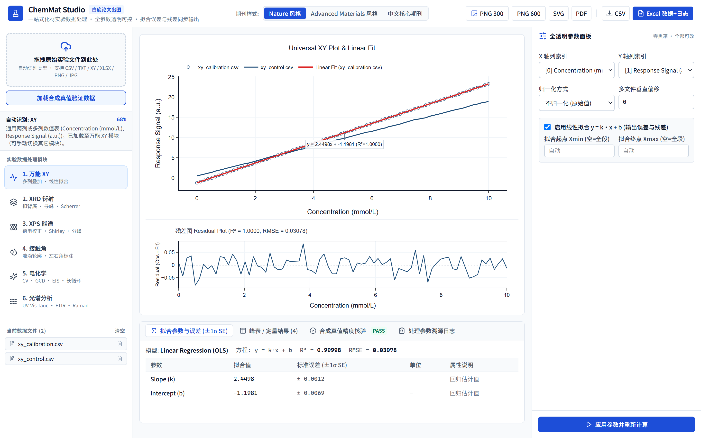
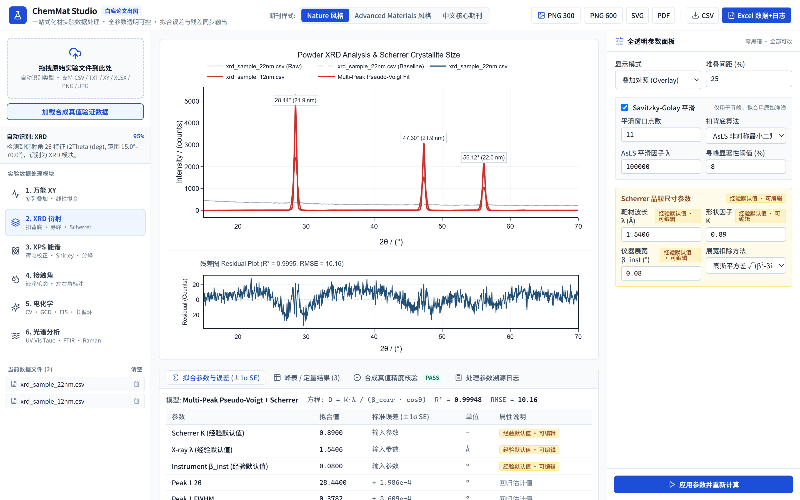
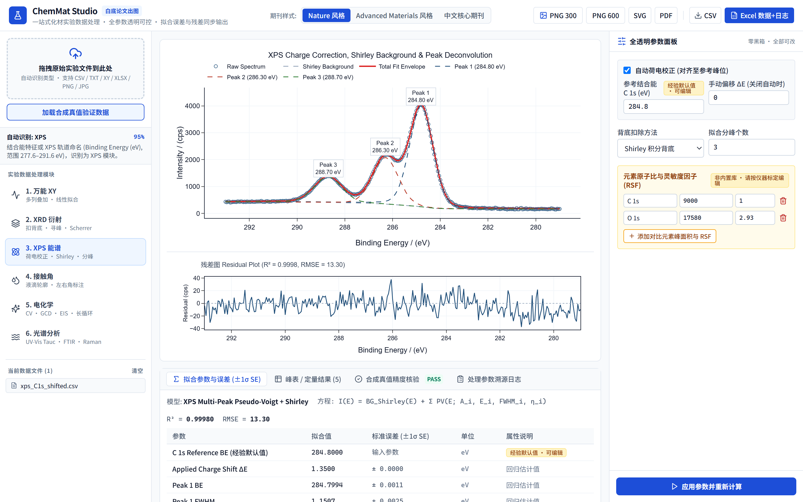
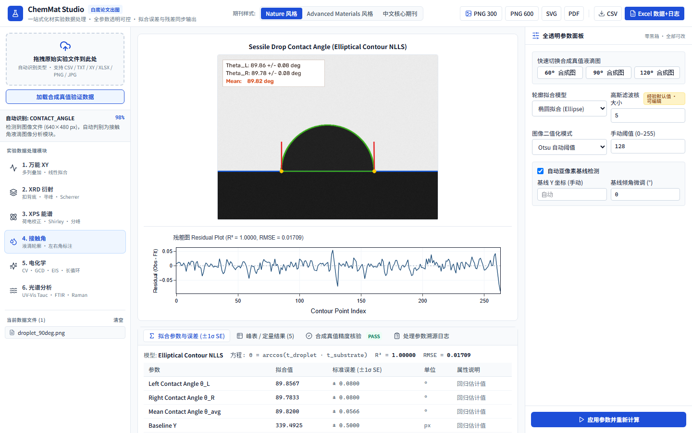
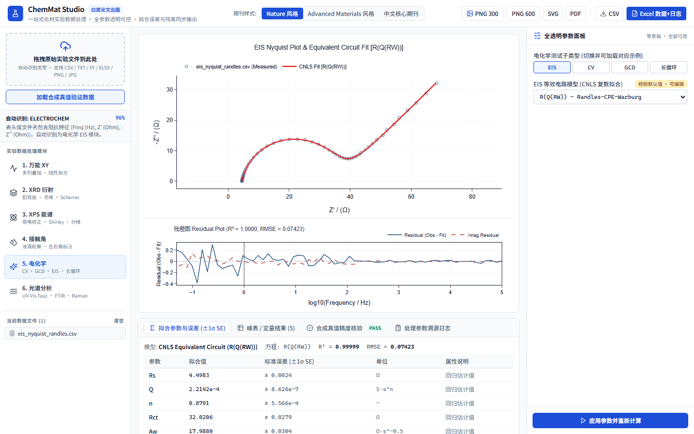

架构诚实说明：ChemMat Studio 的科学计算引擎基于本地 Python（FastAPI + NumPy / SciPy / OpenCV / Matplotlib），无法在纯静态 GitHub Pages 上运行后端计算。本页面仅作为项目功能介绍与浏览器实测图集展示页，请在克隆仓库后按下方说明在本地启动完整工作台。
一站式化材实验数据处理与论文级出图工作台
面向化学与材料科学实验数据处理：支持原始文件类型自动判别、全参数透明可控、协方差误差（±1σ SE）与联动残差图同步输出，一键切换 Nature / Advanced Materials / 中文核心期刊 纯白底（#FFFFFF）导出。
零虚构标准数据
不内置任何编造标准峰位（PDF 卡片）或灵敏度因子库，初始默认值统一标注 经验默认值 · 可编辑。
拟合必带误差与残差
每次线性、Pseudo-Voigt、接触角轮廓、EIS CNLS 与 Tauc 线性外推均同步给出 ±1σ SE 与零基准残差图。
纯白底论文出图导出
支持 300 / 600 DPI PNG（严格纯白四角 (255,255,255)）、SVG 矢量、PDF 与 CSV / Excel 含日志导出。
git clone https://github.com/clei34866-art/chemmat-studio.git && cd chemmat-studio
.\start.ps1 # Windows 一键构建并启动至 http://127.0.0.1:8000
.\start.ps1 # Windows 一键构建并启动至 http://127.0.0.1:8000
六大模块合成真值实测误差汇总
| 实验模块 | 核心方法 | 合成真值实测精度 | 验收标准 | 状态 |
|---|---|---|---|---|
| 1. 万能 XY | 多文件归一化 / 偏移叠加、区间线性拟合 | 斜率误差 0.0069% · 截距 0.1558% | < 2.0% | PASS |
| 2. XRD 衍射 | SG 平滑、AsLS/SNIP 扣背底、Pseudo-Voigt + Scherrer | 峰位误差 0.0001° · 晶粒尺寸 0.338% | < 0.05° / < 5.0% | PASS |
| 3. XPS 能谱 | 荷电校正、Shirley 迭代背底、多峰拟合、可编辑 RSF | 校正 0.000 eV · 峰位 ≤ 0.004 eV · 原子比 0.00% | < 0.05 eV / < 2.0% | PASS |
| 4. 接触角 | 二值化 / 高斯滤波、亚像素基线、椭圆/圆弧/切线拟合 | 90° 合成图 L 0.14° / R 0.22° (R² = 1.0000) | ≤ 2.0° | PASS |
| 5. 电化学 | CV 积分、GCD 比电容、1:1 Nyquist + CNLS、长循环 | EIS 最大 0.6438% · GCD 0.6208% | < 3.0% / < 1.0% | PASS |
| 6. 光谱分析 | UV-Vis Tauc 带隙外推、FTIR（%T↔A 反向波数）、Raman | Tauc 0.0082 eV · Raman 0.05 cm⁻¹ · FTIR 0.06 cm⁻¹ | < 0.05 eV / < 2.0 cm⁻¹ | PASS |
浏览器实操运行截图




